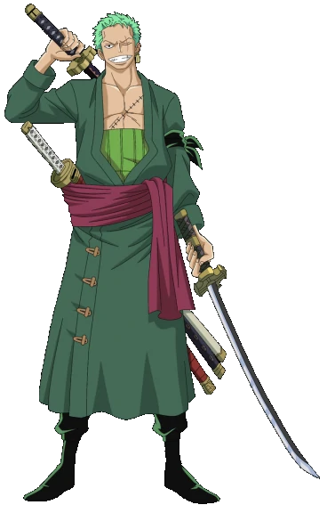

Luffy
Nascido em East Blue, Monkey D. Luffy é um rapaz com um sonho bem ambicioso: desde criança, ele sonhava em ser pirata! Com sete anos de idade, ele conheceu o capitão pirata Shanks, seu maior ídolo! Desde aquela época, ele desejava fazer parte da tripulação de Shanks e viajar pelo mundo atrás do famoso tesouro One Piece, para se tornar o Rei dos Piratas.

Zoro
Como uma criança, Zoro treinou num dojo na vila Shimotsuki. Mesmo como uma criança, Zoro foi forte o suficiente para derrotar a maioria dos adultos, mas não conseguiu derrotar Kuina, a filha do mestre do Dojo. Depois de sua 2000 luta (e 2000 vitória da Kuina) Zoro desafiou ela em particular para mais um jogo - com espadas reais. Apesar de ter melhorado muito desde a sua primeira partida, ele ainda perdeu e chorou de frustração, dizendo Kuina sobre o seu sonho de se tornar a maior espadachim do mundo
